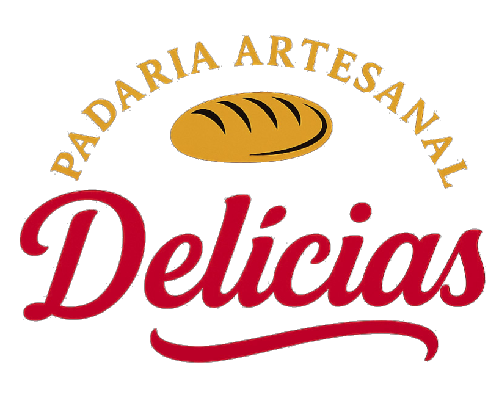

A Padaria Artesanal Delícias nasceu do carinho e da sabedoria de uma avó que sempre acreditou que cozinhar era também um ato de amor. Dona Teresa ficou conhecida na vizinhança pelos pães dourados que perfumavam a casa logo ao amanhecer e pelos bolos que uniam a família em volta da mesa. Suas receitas caderninho de receitas era um item requesitado e admirado. Com os netos maiores veio a ideia: expor o que aprenderam com a avó e realizar um sonho dela.
Começamos em 2009 vendendo tortas e pães sob encomenda. Em 2012 decidimos expandir para um estabelecimento físico. Passamos por baixos e altos, até que em 2015 viramos a chave com o que seria a nossa marca: cestas de café da manhã. Aquele gostinho de casa de vó diretamente encomendado. São 16 anos escrevendo essa história e acreditando sempre que o carinho, a qualidade e o sabor dão um toque a mais na vida.
Mais do que uma padaria, somos um ponto de encontro da comunidade. Cada pão que sai do forno é uma homenagem à Dona Teresa e ao calor humano que ela sempre transmitiu.